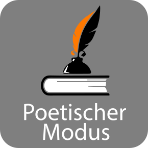

Anstelle einer objektiven Annäherung oder einer sachlichen Präsentation wird das zur Verfügung stehende Material nach bestimmten ästhetischen und formalen Gesichtspunkten neu geordnet: nach akustischen und visuellen Rhythmen, nach übereinstimmender Thematik, Motivik oder Atmosphäre. Es entsteht ein Film von hoher ästhetischer Qualität, der keine erklärenden Logik folgt, sondern der dem Zuschauer einen Assoziationsraum bietet, die „innere Wahrheit“ des Gezeigten selbstständig zu erfassen.
